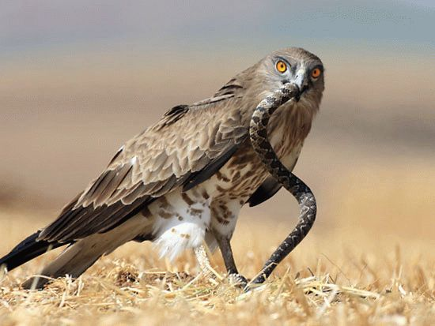

Змееяд встречается в нашей стране только на юго-западе Европейской части. Гнездится он и в соседних странах - Украине, Беларуси, Казахстане и некоторых других республиках СНГ. Практически везде он находится под защитой государства. Занесен в Красную книгу |
 |